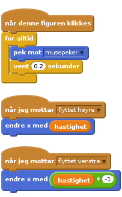

Nivå 4
Scratchkort - Øyne
for alltid klossen. Når man trykker på det grønne flagget og skriptet har startet vil vi at øynene peker i retningen av musepekeren og flytter seg hvert brøkdelssekund.
Merk at vi ogå lytter til meldinger om at kroppen har flyttet seg, slik at øynene beveger seg sammen med kroppen og andre kroppsdeler. Er det noe annet du kan få øynene til å gjøre? Hvis du flytter muspekeren mellom monsterets øyne, så går øynene i kryss!